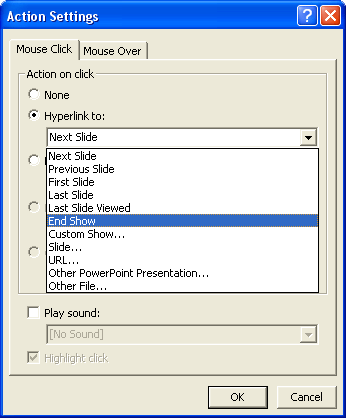
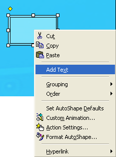
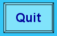

Free
powerpoint
Tutorials
|
Free
powerpoint
Tutorials
|
|
 home home |
Stay at Home and Learn | ||||
Add a Quit Button to a Slide |
|||||
|
The final button we'll add is a Quit button. When this button is clicked, the slide show will end. Add another new slide after slide three. From the menu bar, click Slide Show > Action Buttons, and select the first one, the blank button:
Draw a blank button on your fourth slide, and you'll see the Action Settings dialogue box appear:  Click on Hyperlink to, and the dropdown list will become available. From the list, select the End Show option, as in the image above. Then click OK. When the dialogue box disappears, your button should be selected. Size and position the new button as before. With the button selected, right click to see a context menu:  Click on Add Text, and you'll see a Cursor flashing inside of the button. Type the word Quit. Just like any other text, you can highlight it and change the font style and font colour. Change the font to Arial, bold, and size 18. We also changed the colour to a dark blue. The button will then look like this:  Start your presentation, navigate to the final slide and click your new Quit button. The slide show should end immediately.
|
||||